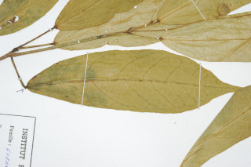
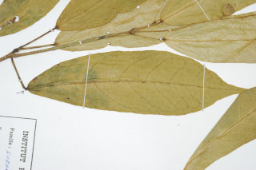
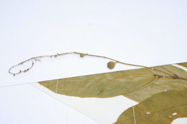
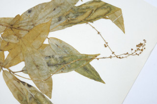
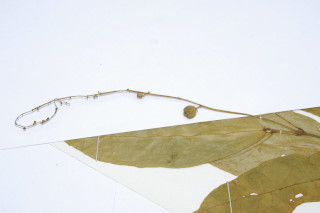
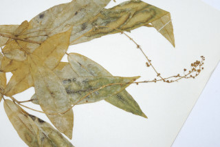

Large shrubs to small trees up to 4 m tall.
ದೊಡ್ಡ ಗಾತ್ರದ ಪೊದೆಗಳು ಅಥವಾ 4 ಮೀ. ಎತ್ತರದವರೆಗೆ ಬೆಳೆಯುವ ಸಣ್ಣ ಮರಗಳು.
4 മീറ്റര് വരെ ഉയരമുളള വലിയ കുറ്റിച്ചെടികള് മുതല് ചെറുമരങ്ങളായോ വളരുന്നു.
பெரிய குறுஞ்செடிகள் முதல் சிறிய மரங்கள், 4 மீ. வரை வளரக்கூடியது.
Branchlets sparsely stellate hairy when young, glabrous when mature.
ಎಳೆ ಕಿರುಕೊಂಬೆಗಳು ವಿರಳವಾದ ನಕ್ಷತ್ರ-ಮೃದುತುಪ್ಪಳದಿಂದ ಕೂಡಿರುತ್ತವೆ ಬಲಿತಾಗ ರೋಮರಹಿತ -ವಾಗಿರುತ್ತವೆ.
ഇളതായിരിക്കുമ്പോള് അവിടവിടെയായി നക്ഷത്രാകാര രോമിലവും, മൂക്കുമ്പോള് അരോമിലവുമാകുന്ന ഉപശാഖകള്.
சிறிய நுனிக்கிளைகள் ஆங்காங்கே நட்சத்திர வடிவ உரோமங்களுடையது, முதிர்ந்த பருவத்தில் உரோமங்களற்றது.
Leaves simple, alternate, spiral; petiole up to 5 cm long; lamina 7.5-17.8 x 3.2-6.4 cm, elliptic-oblong, apex acuminate to caudate - acuminate, base rounded with 2-stipitate glands at the junction of petiole, margin minutely serrate, glabrous or with a few stellate hairs; midrib raised above; secondary_nerves 6-8 pairs; tertiary_nerves broadly percurrent.
ಎಲೆಗಳು ಸರಳವಾಗಿದ್ದು,ಪರ್ಯಾಯ ಮತ್ತು ಸುತ್ತು ಜೋಡನಾ ವ್ಯವಸ್ಥೆಯಲ್ಲಿರುತ್ತವೆ; ತೊಟ್ಟುಗಳು 5 ಸೆಂ.ಮೀ. ವರೆಗಿನ ಉದ್ದವಿರುತ್ತವೆ;ಪತ್ರಗಳು 7.5-17.8 X3.2-6.4 ಸೆಂ. ಮೀ. ಗಾತ್ರ, ಅಂಡವೃತ್ತ-ಚತುರಸ್ರದ ಆಕಾರ ಹೊಂದಿರುತ್ತವೆ;ತುದಿ ಕ್ರಮೇಣ ಚೂಪಾಗುವುದರಿಂದ ಹಿಡಿದು ಬಾಲರೂಪಿ-ಕ್ರಮೇಣ ಚೂಪಾಗುವ ಮಾದರಿಯಲ್ಲಿರುತ್ತದೆ, ಬುಡ ದುಂಡಾಗಿರುತ್ತದೆ, ಪತ್ರದ ಬುಡ ಮತ್ತು ತೊಟ್ಟು ಸಂಧಿಸುವಲ್ಲಿ ವೃಂತವುಳ್ಳ 2 ರಸಗ್ರಂಥಿಗಳು ಇರುತ್ತವೆ, ಅಂಚು ಸೂಕ್ಷ್ಮವಾಗಿ ಗರಗಸ ದಂತಿತವಾಗಿರುತ್ತದೆ; ಪತ್ರಗಳು ರೋಮರಹಿತವಾಗಿರುತ್ತದೆ ಅಥವಾ ಕೆಲವು ನಕ್ಷತ್ರ ತುಪ್ಪಳದಿಂದ ಕೂಡಿರುತ್ತದೆ;ಮಧ್ಯನಾಳ ಮೇಲ್ಭಾಗದಲ್ಲಿ ಉಬ್ಬಿರುತ್ತದೆ;ಎರಡನೇ ದರ್ಜೆಯ ನಾಳಗಳು 6-8 ಜೋಡಿಗಳಿರುತ್ತವೆ; ಮೂರನೇ ದರ್ಜೆಯ ನಾಳಗಳು ವಿಶಾಲವಾಗಿ ಎಲೆ ದಿಂಡಿಗೆ ಅಡ್ಡವಾಗಿ ಕೂಡುವಂತವು.
ലഘുവായ ഇലകള്, ഏകാന്തര ക്രമത്തില് സര്പ്പിളമായി അടുക്കിയിരിക്കുന്നു; ഇലഞെട്ടിന് 5 സെ.മീ വരെ നീളം; പത്രഫലകത്തിന് 7.5 സെ.മീ മുതല് 17.8 സെ.മീ വരെ നീളവും 3.2 സെ.മീ മുതല് 6.4 സെ.മീ വരെ വീതിയും ദീര്ഘവൃത്താകാര-ആയതാകാരവും, പത്രാഗ്രം ദീര്ഘാഗ്രംതൊട്ട് ചെറു വാലോട്കൂടിയ ദീര്ഘാഗ്രം വരെയാണ്, പത്രാധാരം വൃത്താകാരത്തിലാണ്, ഇലഞെട്ടുമായി ചേരുന്ന സന്ധിയില് 2 ഗ്രന്ഥികളുണ്ട്; അരികുകള് ചെറുതായി ദന്തിതമാണ്, അരോമിലമോ അല്ലെങ്കില് ഏതാനും നക്ഷത്രാകാര രോമങ്ങളോടു കൂടിയതോ ആണ്; മുകളില് ഉയര്ന്നു നില്ക്കുന്ന മുഖ്യസിര; 6 മുതല് 8 വരെ ജോഡി ദ്വിതീയ ഞരമ്പുകള്; വീതിയേറിയ പെര്കറന്റ് വിധത്തിലുളള ത്രിതീയ ഞരമ്പുകള്.
இலைகள் தனித்தவை, மாற்றுஅடுக்கமானவை, சுழல் போன்று அமைந்தவை; இலைக்காம்பு 5 செ.மீ. நீளமானது; இலை அலகு 7.5-17.8 X 3.2-6.4 செ.மீ., நீள்வட்ட-நீள்சதுர வடிவானது, அலகின் நுனி அதிக்கூரியது முதல் வால்-அதிக்கூரியது, அலகின் தளம் வட்டமானது, அலகு மற்றும் இலைக்காம்பு இணையுமிடத்தில் 2 காம்புகளுடைய சுரப்பிகள் கொண்டவை, அலகின் தளம் மிக நுண்ணிய ரம்ப பற்களுடையது, கீழ்பரப்பு உரோமங்களற்றது அல்லது சிறிது நட்சத்திர வடிவ உரோமங்களுடையது; மையநரம்பு மேற்புறத்தில் அலகின் பரப்பைவிட உயர்ந்து இருக்கும்; இரண்டாம் நிலை நரம்புகள் 6-8 ஜோடிகளுடையது; மூன்றாம் நிலை நரம்புகள் அகன்ற பெர்க்கரண்ட்.
Flowers unisexual, monoecious; male flowers often fascicled on 12-25 cm long slender racemes; female flowers usually solitary and near the base of the raceme.
ಹೂಗಳು ಏಕಲಿಂಗಿಗಳಾಗಿರುತ್ತವೆ.ಗಂಡು ಮತ್ತು ಹೆಣ್ಣು ಹೂಗಳು ಒಂದೇ ಸಸ್ಯದಲ್ಲಿರುತ್ತವೆ;ಗಂಡು ಹೂಗಳು ಹಲವು ವೇಳೆ ಗುಚ್ಛಗಳಲ್ಲಿದ್ದು 12 -25 ಸೆಂ ಮೀ. ಉದ್ದವಾದ ತೆಳುವಾದ ಮಧ್ಯಾಭಿಸರ ಪುಷ್ಪಮಂಜರಿಯಲ್ಲಿ ಇರುತ್ತವೆ; ಹೆಣ್ಣು ಹೂಗಳು ಸಾಧಾರಣವಾಗಿ ಒಂಟಿಯಾಗಿರುತ್ತವೆ ಮತ್ತು ಮಧ್ಯಾಭಿಸರ ಪುಷ್ಪಮಂಜರಿಯ ಬುಡದ ಬಳಿಯಲ್ಲಿರುತ್ತವೆ.
പൂക്കള് ഏകലിംഗികളാണ്, മൊണീഷ്യസും; ആണ്പൂക്കള് 12 മുതല് 25 സെ.മീ വരെ നീളമുളള നേര്ത്ത റസീമുകളില് കൂട്ടമായുണ്ടാകുന്നു; പെണ്പൂക്കള് സാധാരണയായി ഒറ്റക്കായോ റസീമുകളുടെ കീഴ്ഭാഗത്തായോ ഉണ്ടാകുന്നു.
மலர்கள் ஓர்பாலானவை, ஓரகம் கொண்டவை; ஆண்மலர்கள் கூட்டமாகக் காணப்படுபவை, 12-25 செ.மீ. நீளமுடைய மெல்லிய ரெசீம்; பெண்மலர்கள் பொதுவாக தனித்தவை மற்றும் ரெசீமின் தளத்தில் காணப்படுபவை.
Capsules 3-valved, globose, densely stellate hairy; 3-seeded.
ಸಂಪುಟ ಫಲಗಳು 3 ಕೋಶಗಳನ್ನು ಹೊಂದಿದ್ದು ಗೋಳಾಕಾರದಲ್ಲಿರುತ್ತವೆ ಹಾಗೂ ದಟ್ಟವಾದ ನಕ್ಷತ್ರ ರೋಮಗಳಿಂದ ಕೂಡಿರುತ್ತವೆ ಮತ್ತು 3 ಬೀಜಗಳನ್ನೊಳಗೊಂಡಿರುತ್ತವೆ.
3 വിത്തുവീതമുളള കായ, കനത്തില് നക്ഷത്രാകാര രോമിലമായ, 3 ഭാഗങ്ങളുളള ഗോളാകാര കാപ്സ്യൂള് ആണ്.
வெடிகனி (கேப்சூல்) 3 அறைகள் கொண்டது, அடர்த்தியான நட்சத்திர வடிவ உரோமங்களுடையது; 3-விதைகளையுடையது.
 


 


